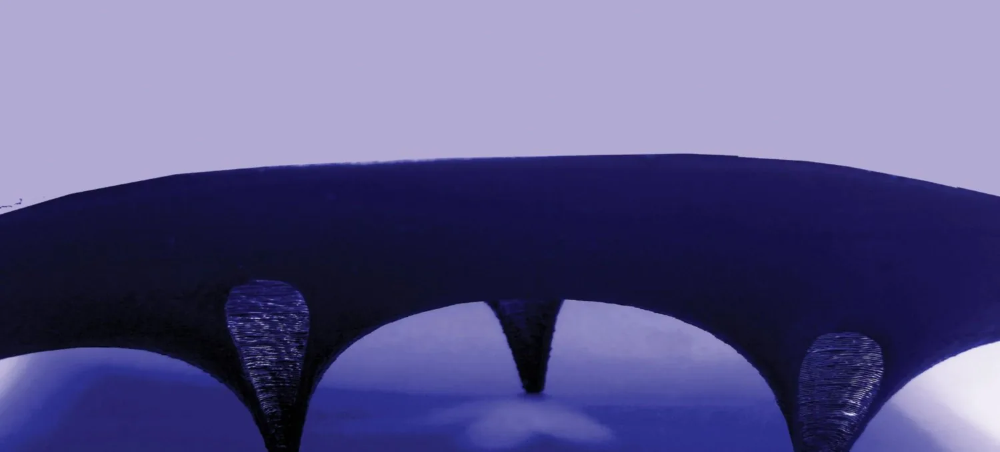

Libish Murugesan: Computational
Design
Portfolio
Robotic fabrication · geometry processing · stone · heritage. I build the perception, geometry and motion systems that let machines work with irregular, found and natural material: pine offcuts, scanned logs, stone salvaged from demolition.

Computational designer & researcher in robotic fabrication and geometry.
I build the geometry, perception and motion systems that let machines fabricate with material that does not come in standard sizes: irregular timber, salvaged stone, sheet metal, clay and concrete. The work spans graduate research, built pavilions, field surveys and open-source tools for AEC, from a Grasshopper plugin for stone to a pointing machine for carvers.
Trained in architecture (B.Arch, SPA Vijayawada, 2019) and robotics & advanced construction (MRAC, IAAC Barcelona, 2021-23); since 2025 a Research Assistant at Alfaisal University, Riyadh, in digital fabrication and robotic manipulation, also teaching workshops and an elective course.
- Focus
- Robotic fabrication · scan-to-fabricate · GPR & stone · geometry & packing · BIM software
- Stack
- Rhino · Grasshopper · C# · Python · ROS 2 · MoveIt 2 · Open3D · OpenCV · Three.js · PyTorch
- Published
- eCAADe 2022 · Caerdroia 54 (2025) · Research Square preprint (2026) · Zenodo & figshare datasets
- Robots
- UR10e · KUKA · ABB · TurtleBot · drones
Work, by section
Open a project for its full image set, the process steps and, where there is one, a before-and-after comparison. Hover a card to flick through its images; the arrow keys move between projects and Esc closes.
The same portfolio as 26 landscape plates
Designed for print: every plate is live text, sized 1320 × 880, and saves cleanly to PDF from Chrome or Edge.
Turn the vault, pull the stones apart
Models exported from the Frahan StonePack examples (the Güell barrel is split into blocks for viewing). Drag to orbit, scroll or pinch to zoom, hover a stone to read it, and use the explode slider to see how each piece sits in the assembly.
Rubble vaults, voussoirs & fracture-aware blocks
Frahan StonePack is an open-source Rhino 8 and Grasshopper plugin that takes stone from the ground to the building. These renders come from its worked examples.
Studios, prototypes & pavilions
Academic studios and hands-on prototypes: a bamboo shelter tied with rope knots, deployable origami shades, a transformable scissor-joint sphere and masks printed during the pandemic.
Publications
Papers, preprints and openly licensed datasets, with DOIs. Most of the code and data behind them is public on GitHub, Zenodo and figshare. Check the numbers, and tell me where they are wrong.
Original plates
The 23 plates of the previous portfolio, kept in full. Open any plate to read it at full size and zoom into the details.
Thank you.
A decade of work in one place, from the 2017 to 2023 academic and robotic-fabrication projects to the 2023 to 2026 research, software, sensing, stone and heritage work. Thank you to the studio teams, co-authors, crews and colleagues named in these pages. If something here is wrong, tell me.